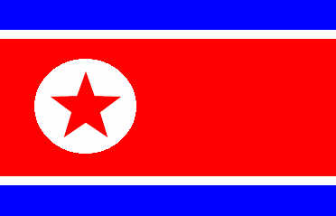

por Pedro Henrique B. N. Prado

Foram 44 anos de espera. Com apenas uma experiência em Copas - uma surpreendente classificação às quartas de final em 1966, eliminando a Itália pelo caminho -, a Coreia do Norte vai à África do Sul sob a mesma incógnita com que disputou o Mundial na Inglaterra.
Sem ter enfrentado nenhuma das outras seleções que vão ao Mundial nos últimos anos, a não ser as do continente asiático, a equipe norte-coreana vai credenciada pela ótima campanha nas eliminatórias: em 16 jogos, foram nove vitórias, cinco empates e apenas duas derrotas.
No caminho, a Coreia do Norte deixou para trás seleções de maior tradição, como Arábia Saudita e Irã. Dona de um futebol defensivo, a equipe norte-coreana joga pelo resultado, sempre fechada na zaga, em busca de contra-ataques. O técnico Kim Jong-Hun varia entre os sistemas 4-5-1 e 4-4-2.
O craque do time é o meia-atacante Hong Yong-Jo, que joga no FC Rostov, da Rússia. O jogador, que, dependendo do esquema, pode ser escalado no meio ou no ataque, é o principal motor ofensivo da equipe. O atacante Jung Tae-Se, do Kawazaki Frontale, do Japão, é o homem de área da seleção.
A Coreia do Norte será o rival do Brasil na estreia da Copa, dia 15 de junho, pela primeira rodada do Grupo G, às 15h30m (de Brasília).